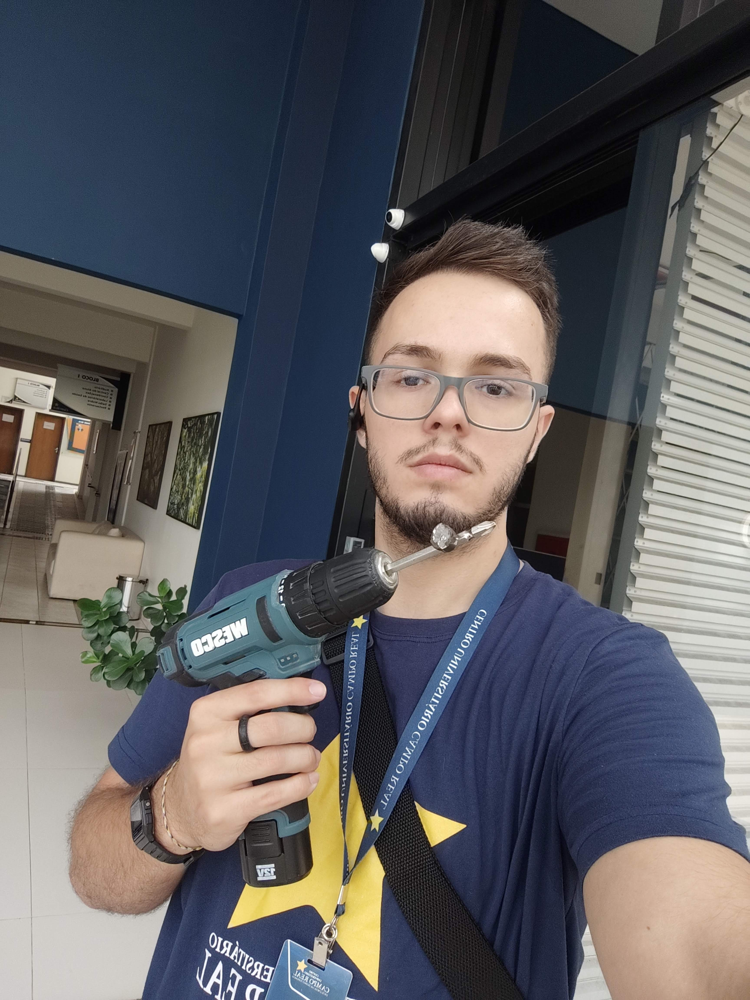

Curriculum vitae - 2025

Hugo
Oliveira
Objetivo profissional:
Estudante de Ciência da Computação, ansioso para aplicar conceitos acadêmicos, aprender sobre o mercado de trabalho, desenvolver habilidades práticas e fortalecer capacidades de trabalho em equipe.
Quero acima de tudo contribuir com o crescimento de meu time e da equipe como um todo.
Formação acadêmica:
Cursando ciência da computação - 5º período
- 2021 - Universidade Federal de Itajubá
- 2024-2026 - Universidade Estadual do Centro Oeste
Ensino médio:
- 2018-2020 - Colégio El-Shaday
Experiência profissional:
- 2022-2024 - Serviço voluntário em instituição (A Igreja de Jesus Cristo dos Santos dos Últimos Dias)
Durante dois anos pude servir como missionário compartilhando com evangelho com pessoas de diversas regiões, e etnias. Nesse serviço pude tanto trabalhar com diversos companheiros de diferentes nacionalidades (Americanos, brasileiros, venezuelanos, peruanos, salvadorenhos, etc) e também liderei grupos de até 10 missionários/missionárias.
- 2024-2025 - Estágio remunerado atuando no suporte técnico em universidade particular (Centro Universitário Campo Real)
Duranto o estágio realizei diversas atividades relacionadas a áreas da ciência da computação, dentre elas: Montagem e manutenção de computadores (Hardware e Software), organização e ajuste de equipamentos eletrônicos diversos (Datashows, mesas se som, Ar-condicionados, etc), instalação e reparo de redes (cabeamento, racks e manutenção via software).
Habilidades e idiomas:
- Linguagens de Programação: C e Java
- Desenvolvimento de Sites em HTML e CSS
- Redes: Configuração básica e manutenção
- Suporte Técnico em TI
- Manutenção de Hardware e Software
- Montagem e Configuração de Computadores
- Gerenciamento de Equipamentos Eletrônicos
- Monitoramento e Diagnóstico de Conectividade
- Administração de Sistemas e Softwares de Rede
- Comunicação Eficaz
- Liderança e Gestão de Equipes
- Planejamento e Execução de Projetos
- Ensino, Treinamento e Mentoria
- Gestão de Tempo e Organização
- Resolução de Conflitos e Negociação
- Tomada de Decisão sob Pressão
- Resiliência e Adaptação
- Motivação e Inspiração de Equipes
- Delegação de Tarefas e Coordenação de Atividades
- Serviço Comunitário e Empatia
- Habilidades Interpessoais e Relacionamento com o Cliente
- Oratória e Apresentações para Grandes Audiências
- Autodisciplina e Comprometimento
- Ética de Trabalho e Integridade
- Capacidade de Iniciativa e Proatividade
- Desenvolvimento Pessoal e Espiritual
- Gerenciamento de Recursos e Logística
- Avaliação de Desempenho e Feedback Construtivo
- Resolução de Problemas Técnicos
- Atendimento ao Usuário e Suporte Técnico
- Trabalho em Equipe
- Adaptabilidade e Aprendizado Rápido
- Idiomas: Português (Fluente) e Inglês (Intermediário - Avançado)